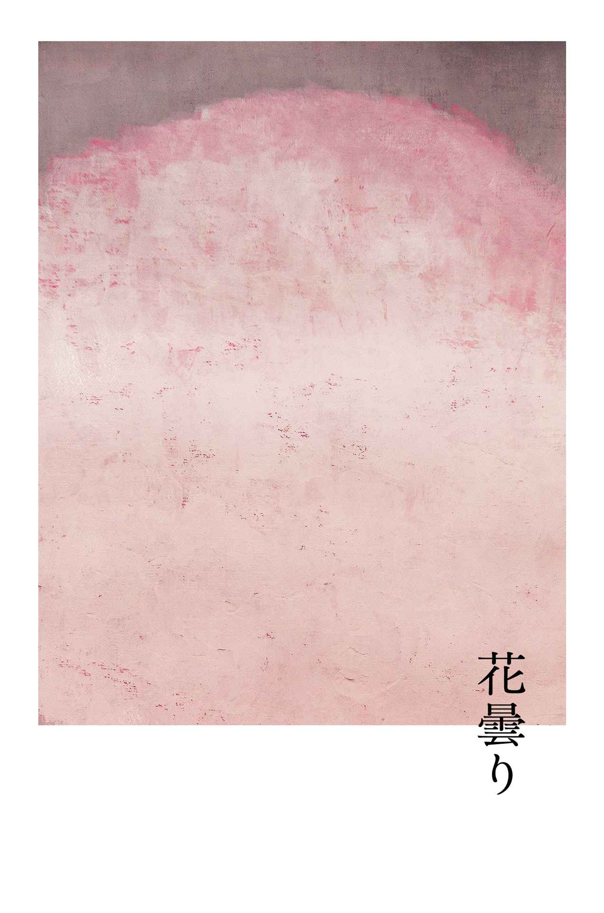
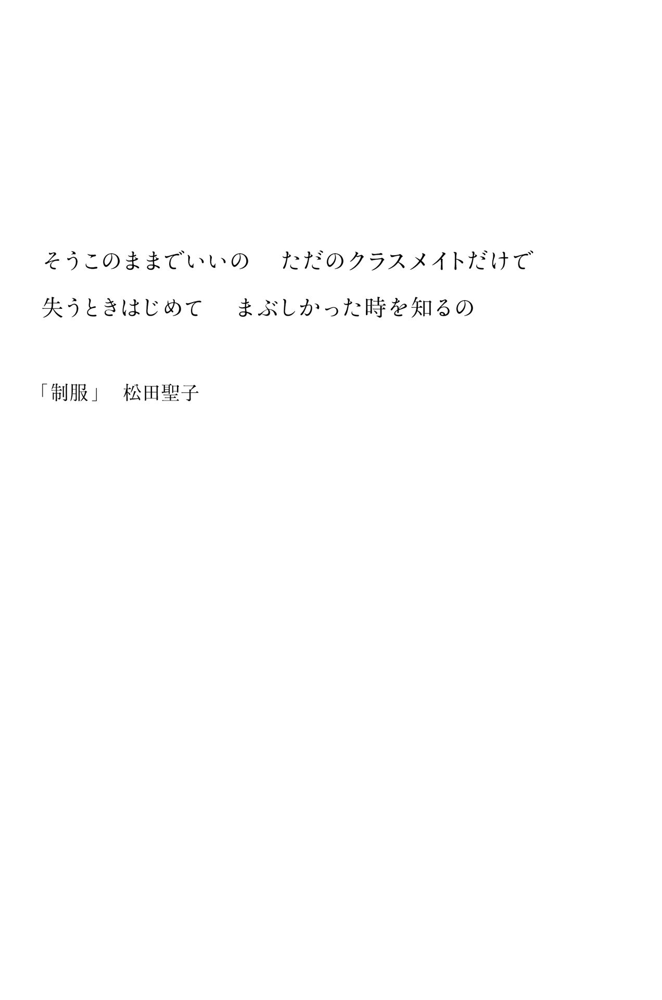
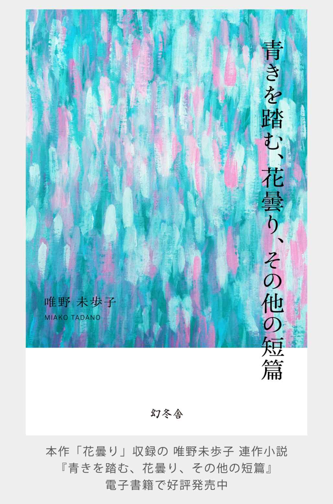

| 花曇り （『青きを踏む、花曇り、その他の短篇』より） | |
| 唯野未歩子 | |
| (2014) | |
 幻冬舎
幻冬舎
花曇り 『青きを踏む、花曇り、その他の短篇』より
唯野未歩子


あたしほど、かなしみを知り抜いている十七歳は、いないと思う。
来月十八歳になる。この、神さまに見捨てられたような人生が、十八年間も続けられたなんて、ほとんど奇跡だ。
なぜって、早生まれで、未熟児だったあたしは、もともと、のんびりした子どもだったから。ひとの三倍はテンポが遅れる。遅れていることにすら自覚がない。とろくさいのにマイペースで改善の余地もない。筋肉質、痩せっぽち、神経質。そして、こだわり屋だった。好きな色はピンク。絶対。それは、いまだに譲れない。
でも、保育園の頃は、ズボンばかり穿かせられていた。スウェット生地の、簡素な短パン。色は当然、紺か深緑。上半身はいつも、霜降りグレイのワンサイズおおきな、だぼだぼのＴシャツだった。だから、あたしは母親のスカーフを盗み、腰に巻いて、スカートにみたてていた。保育園にいるときだけ、毎日、毎日。あの、シルクの肌触り。青と水色と紫の、水で溶いた絵の具みたいな色合い。野ばらの花柄。それは、母親が所有していた数すくない装飾品のひとつだった。
スカートは、母親に隠していたせいで、洗濯されることがなく、常時、薄汚れていた。どんなに注意を払っていても、ランチのたびにできてしまう、ケチャップの、おしょうゆの、おソースの、しみ。しみはどれも、ひどくちっぽけだったけれど、その色濃さをみるにつけ、あたしは絶望した。
たぶん、あれが人生ではじめてかんじた、かなしみだった。
小学生になると、変わり者扱いされた。なぜだろう。気がつけば、ひとりぼっち。けれども、学校なんて、たいした問題ではない。同級生も先生も所 詮 は赤の他人だから。あたしにとっては、集団に堪えるよりも、孤独に慣れるほうが、ずっと容易 く、苦しいのは、むしろ家族と一緒にいるときだった。
あたしは母親の望むとおりの人間になろうと努力していた。我が家の法は母だった。あたしには父はいない。母は心身ともに強い人間で、器械体操教室を営んでいた。女手ひとつで子どもを養い、父親の役割をも担い、そこいらへんにいる本物の男よりも男っぽく、同時に男嫌いだった。
男らしくあれ。それは広岡家の、いわば家訓だ。
国体出場経験がある母や、体育推薦で高校入学した五歳うえの姉のように、人間はみな、雄々しく、野蛮で、逞 しくあらねばならない。それなのに、あたしは器械体操が嫌いだった。最悪なのはコスチュームだ。せめて、腰まわりにバレリーナのようなチュチュがついていれば、もうすこしやる気がでたのかも知れないけれど。ボディラインを露 にし、これみよがしに開脚したり、逆さまになったり、背を反らせるこの競技は、自慰行為みたいで破廉恥だ。いっそ相撲のように回しひとつで取っ組みあうほうが、まだ慎み深い行為だろうと、思春期にさしかかる間際のあたしは考えていた。
中学校では、パシリをやらされた。けれども、これも、たいした問題ではない。いまにして思えば、もっとも不快だったのは制服だ。あの、分厚いナイロン生地。醜悪な色味のジャージ。アレンジひとつ凝らせない厳しい校風。無粋なブレザーに身を包み、休み時間毎 に、コンビニエンスストアへ駆けこむ汗だくの自分の姿が、冷蔵ショーケースのガラスに映っているのを目にしてしまうたび、みじめな気持ちになった。
それでいて、パシリという役割は嫌いじゃなかった。理由は、ひとに尽くす行為だから。思いがけないことに、パシリをやりはじめて得たものは多かった。
優等生気質で万能な母や姉と違い、劣等生のあたしは、繊細な一面も兼ね備えていた。自分のことについては鈍感だけれど、時間をかけて観察しているうちに、他人の要求を察知できる能力がある。ひとくちでいえば気が利いた。
「今日は猛暑だから、炭酸飲料もいいけれどスポーツドリンクのほうがいいと思う」
とか、
「ダイエットしたいなら、おやつのスナック菓子はやめて、おとうふにキムチを載せたほうが、美 味 しくて効果的だよ」
とか、
「声が嗄 れていたでしょ。はちみつ入りのキャンディにしておいたわ」
とか、
「試験勉強、お疲れさま。部活もあって大変だよね。ドリンク剤を加えておいたから、この酷寒を乗り切ってね」
とか、
「失恋した直後で、食欲減退しているのもわかるけれど、ヴァニラ・アイスクリームを山ほど食べて、自分のハートを癒してあげて」
など、コーディネートはもれなく、どんぴしゃだった。
これまで発揮する機会に恵まれなかった特技は、もうひとつあった。物心ついたときから、働く母や、器械体操のトレーニングで忙しい姉の代わりに、家事のほとんどを引き受けてきたあたしは、手先が器用だった。青空にかかった七色の虹に、蝶々が無数にとまっているデコを施した、ちいさな小銭入れ。それが女の子たちの目にとまり、みんなのペンケースや手鏡やプリクラ帳を、デコってあげることになった。きらきらのストーン、ぴかぴかのラメ、つやつやのマニキュア。セメダインスーパーＸ２も爪 楊枝 もマジカルピックも忠実なしもべで、評判は上々だった。おかげで、じょじょに居場所を獲得した。孤立することはなく、どちらかといえば重宝されていた。
高校生になって、あたしはようやく、すべてを乗り越えた。つまり、自分を偽るのをやめたのだ。この世には、あたししか、あたしを愛してあげられるひとはいない。あたしの唯一の味方は、あたしひとりだけだと、悟ったのだった。
あたしはきれいになりたかった。器械体操よりはクラシック・バレエに、ブレザーよりはセーラー服に、紺色よりはピンクに、あたしは惹かれる。どうしようもなく。白い煮豆に黒ごまを添えたような、そっけない目鼻立ちをしているにもかかわらず、むかしから可愛いものが大好きだった。だいたい、きれいになりたいという自分の欲望に遠慮をするなんて、ばかばかしいことだ。胸に灯 る情熱は消せない。この炎を揉み消したら、あたしは、あたしじゃなくなっちゃう。そうしたら、いったい誰になればいいの？
そんなふうに格闘するあたしを認め、必要とする友だちは、意外と多かった。女の子はみんな大人で、他人の個性を受けいれられる程度には成長していた。
友だちができて、高校は好きになった。相変わらず、制服はブレザーだったけれど、器械体操教室をやめ、あたしは髪を伸ばしはじめた。メイクも勉強し、制服の裏地にはレースを縫いこみ、ボタンはぜんぶとり替えた。食事制限し、ストレッチし、いちから自分を鍛え直す。爪の手入れ、肌の手入れも、研究した。脱毛テクニックに至っては、あたしの右にでるものはないほど、技を極めた。他人をデコるだけでなく、あたしは自分自身をデコってあげたのだ。もちろん、友だちの持ち物をデコることにも、手を抜かなかった。高校が比較的、自由な校風だったのも幸いしていたのだろう。あたしの喋 りかた、仕草、表情を、みんなが真似した。同級生だけでなく、先輩や後輩、若い先生まで。だけどそれは、あたしを崇拝して、というのじゃなく、たんにからかって、という意味合いだった。
要するに。あたしは笑われ、無償でデコり、要求されればバク宙し、美顔マッサージを施し、ときには恋愛相談を受け、日々のお使い（パシリとは、もういわない）もきちんとこなし、みんなをハッピーにしてあげられた。
卒業式まで、あと一ヶ月。仲良しの友だちと別れたくはない。でも、制服を脱げる日がくるのは待ち遠しい。なによりも。
友だちはみんな、あたしを、デコちゃんと呼ぶ。仲良しは三人いる。リカ、ちー、まさみ。
窓の外は、みぞれ。
あたしたちは席をよせあって、放課後じゅう、お喋りをしている。
最近はいつもこうだ。コートを羽織り、マフラーを巻き、帰り支度はととのっているのに、また席に座ってしまう。誰からともなく。鞄を膝に載せたまま、お菓子の封を切り、ペットボトルのお茶をまわし飲みし、帰れない。教室はいまや、どんなカフェよりも居心地のよい、憩いの場だった。
二月の終わり。今日はひどく寒いけれど、ここは特別にあたたかい。
春がきたら、リカは北海道の獣医大学へ、ちーは保育士専門学校へ、まさみは私大英文科へ、あたしは被服専門学校へと、進む。卒業旅行の手配も済み、いまのあたしたちには、実はもう、あんまり喋ることがない。かなしいけれど。
沈黙を押しのけて、
「そういえばさ。デコちゃんの隠れファン、またみつけちゃった」
しっかり者のリカがいう。
「誰、誰？」
美人のまさみが華やいだ声で受け継ぎ、
「やだ、また？」
あたしはおどけて、
「ファンならファンで堂々とすりゃあいいじゃない。隠れる必要ないっての」
ぷうっと頰を膨らませ、わざと、むっとしたふりをする。
定番の流れに、みんなはくすくす笑い、
「誰でしょう？」
これもまた定番で、リカは焦 らし、
「女子？ 男子？」
天然だけれど誰よりも親切な、ちーが訊 ねる。
そこで、
「男子に決まってるじゃんよ」
ドスの利いた声をだし、あたしが目を剝 く。思いきり。
みんな爆笑。これは、自分たちのあいだでしか通用しない間合いだと、ここにいる全員がわかっていて、あたしたちはそれを慈しむように笑う。すこし過剰に、でも誠意をこめて。ここからさきは、まさみとちーが、いろんな男子の名前を列挙するのが習わしとなっている。生物部で髪の毛がねっとりしているコッヒー。サッカー部エースの高橋くん。おしゃれで身軽なデブの小山内。体臭を気にするあまり、生ゴミ消臭剤を首からさげているという噂のある、剣道部の加藤。顔はいいのに特徴がなさ過ぎて、いまいち名前がはっきりしない、野田か野口か田口くん（おそらく、このうちのどれかだ）。
あたしたちは盛りあがる。永遠に、お喋りし続けられるような気分になり、ずっとこうしていたいと思うのだけれど、いつしか、やっぱり終わりはくる。
「だめだ。わかんない、誰？」
まさみが訊ね、
「亮」
と、リカが答えた。
「だけどそれ、おかしくない？ 亮くんはリカのことが好きなんでしょ？」
ちーが目を丸くした。
「亮って、格好いいけど、いいかげんなんだもん」
リカは肩をすくめ、
「なんだよ、それ。亮くんじゃ、オチきらないなあ」
まさみは鼻白んだ。
「卒業しちゃうんだし、最後なんだから、つきあってあげれば？」
ちーが訊ね、
「その台詞 、もう死ぬほど聞いたんですけど」
首をふりながら、リカはつぶやく。
「ココア飲みたい」
まさみはすっくとたちあがり、リカが机上を片付けはじめ、
「デコちゃん、どうしたの？」
と、あたしをみたのは、ちーだった。
「なんで？」
あたしは咄 嗟 に訊ね返した。みんながいっせいに、あたしの顔を覗きこむ。
「顔が赤いじゃん」
まさみが目を見張り、
「大丈夫？」
ちーは慌てて、
「わかった。それは風邪だ」
リカが心配げに断言した。
「そうかも」
あたしはうなずく。ほんとうは、まったく元気なのに。
それから教室をあとにする。おもてにでると、びしゃびしゃと雨が降っていた。
吐く息は白。しずくは銀。傘は淡紅色。
雨の日の帰り道、あたしたちはいつも喋らない。傘は一定の距離をとらせるから。みんな縦一列になり、自分の足下をみつめている。ふり返ることもなく。
あたしが亮くんに恋したのは一年半前。亮くんがリカに恋していることを知った日だ。『デコちゃんの人生相談室』が、出逢いだった。
それは、二年の文化祭の出し物で、あたしは魔術師みたいな扮装をし、お香を焚き、黒幕を張った教室のすみに座っていた。客足は絶えず、悩みごとの四割が美容について、二割が愚痴で、あとの四割はひやかしだった。そんな客層のなか、亮くんはひとり、ひどく深刻な雰囲気を漂わせていた。長身痩 軀 で、線の細い、傷つきやすそうな男の子。守ってあげなきゃいけないひと、というのが、第一印象だった。
けれども、
「なあんだ、おまえだったのかあ」
と、亮くんは笑った。
おおげさに、がっかりしたような表情をし、どさっと椅子に腰をおろす。
「デコちゃんっていうから、高峰秀子かと思ったのに」
かなり意地悪く、そう続ける。
亮くんは、ふてぶてしいのに憎めない、どこか不敵な笑顔をみせた。見た目より嫌なやつかも。それが、第二印象。そもそも、高峰秀子という人物は、古い日本映画のスターだけれど、いまどきの誰もが知っている女優ではない。軽口にしては危険なチョイスで、相手に笑って貰えない確率のほうが、遥かに高いはずだった。それなのに、亮くんはいやに堂々としている。悠々閑々というかんじ。自信家なのだろうと、あたしは思った。
と同時に、そのズレかたをみて、あたしはなんだか、ほっとした。ほっとしたとたん、吐きそうなくらい、どきどきしてくる。心臓はすでに自分の一部ではなく、縦横無尽に暴れまわる無法者。主人になんの断りもなく、くちから飛びでて、いまにも家出してしまいそう。これまでも、気になる男の子というのはいたけれど、ぜんぜん違う。
こんなの、はじめて。
決定打の第三印象。約三分で、あたしは恋に落ちていた。
どうしたらよいのか、わからなかった。わからないながらも、どうにかしたい。おそらく、まともにできるのは俠 気 を示すため、詫びをいれることくらいだと、これもまた支離滅裂ではあるのだけれど、直感的にはっきり思った。
それで、
「ごめんなさい。あたしの『デコ』は、デコレーションの『デコ』なの」
深く頭をさげた。
「いや。ごめん。俺、古いものが好きなんだ」
さっきとはうってかわった、はにかんだ口調で、亮くんは頭をぽりぽり搔いた。
「うん。わかる気がします」
あたしはうなずき、
「おまえとリカ、仲いいじゃん。あいつ、俺のこと、なんかいってた？」
唐突に、亮くんは訊ねた。
「リカ？」
意外な名前の出現に、あたしは思わず、繰り返した。
「俺たち、おなじ中学なんだ」
亮くんが答える。
「むかーし、ちょっと、つきあってたんだけど。文化祭の打ち上げのあと、実は、リカにまた告白しようと思ってて。二次会に流れるときに、こう、なんつうか」
ぽつぽつと続け、
「うまく連れだしてきてくれない？」
と、締めくくった。
なぜだろう。あたしはさほど驚いてはいなかった。
亮くんがかなしげだったからか、あるいは、自分のかなしみから逃避したのか。
いずれにせよ、あたしはいま、自分が生まれてはじめて恋に落ち、生まれてはじめて失恋したことに、まったく気がつけなかった。
「がってんだ」
全身全霊をこめて、あたしはちからこぶをこしらえた。
「へんなやつ」
びっくりした顔をして、亮くんは笑った。
今度は、素敵な笑顔だった。この笑顔を守るためなら、どんなことだってしてあげたい。そう思った。だから、あたしは亮くんとリカの恋のキューピッドになりたかった。心から。けれども、あの晩、リカは呆 気 なく、亮くんをふってしまった。あたしはいまも亮くんが好き。そして、亮くんはいまだにリカに恋している。
中学時代に、ふたりが別れた原因を「亮が浮気したせいだ」と教えてくれたのはリカだった。亮くんは「リカが俺についてこないから、やけになってナンパして、適当なやつと遊んだだけ。あんなくだらないこと、本気で受けとるほうが、どうかしている」と弁明している。あたしからみると、リカは完璧主義で高飛車な子。亮くんは男っぽいのに女 々 しいところがある。むしろ、男らしさというものは、女々しさと同義語なのだと、あたしは亮くんから学んだくらいだった。
週末の深夜、あたしと亮くんは、たまに遊ぶ。
ファミリーレストランでお茶をしたり、名画座のオールナイト上映につきあったり、公園で缶ビールを呑む。これは誰にも話していない。あたしだけの秘密だ。
そういうときはわざわざ、みすぼらしい格好をする。母のぼろいＴシャツだとか、姉のくたびれた軍パンだとかを、こっそり借りる。子ども時代とは逆の理由で、おなじ悪事を働いているのだから、人生って皮肉なものだ。長い髪はひとつにまとめ、スニーカーを履く。本心をいえば、おしゃれをしていきたいのだけれど、張り切ったあたしをみて、亮くんにどん引きされるのが恐かった。
亮くんとあたしは気があった。ものすごく。
あたしの性格は穏やかなほうだけれど、亮くんは日によって浮き沈みがある。亮くんは自由な思想の持ち主で、あたしの思考回路は割と保守的。あたしは現実派で、亮くんは夢見がち。亮くんは阪神ファンで、あたしはヤクルトファン。あたしは気が弱く、負けることに慣れていて、亮くんは勝ち気。闘争心も強く、プライドも高い。あたしたちは正反対だったけれど、一緒にいると寛げて、お互いが自分にないものを捧げあえる関係だった。
あるときの亮くんは、
「おまえ、顎からちょろっと一本ヒゲが生えてるぜ。やっべえ。なまずだ、なまず」
と、げらげら笑って、あたしをいじめる。
また別のときには、
「俺らのこと、じろじろ、みるんじゃねえよ」
ぼうっとしているあたしをかばって、街中で、通りすがりのひとに喧嘩を売る。
さらには、
「おまえといると癒される。ほんとに、俺、感謝してるんだ」
なんて言葉で、ほろりとさせてしまう。
亮くんの、くちさがないところ、危なっかしいところ、素直過ぎるところ。眼 差 しの強さも、後ろ姿の脆 さも、はにかんだときに頭をぽりぽり搔く仕草や、考えごとをしながら爪を嚙む癖も、ぜんぶ。ぜんぶが、ずっと、まぶしかった。
でも、このままでいいの。あたしはそうも思っている。
告白できなくても、手を繫 いだり、ちゃんとしたデートをしたり、女の子としてみて貰えなくても。いつまでも、このままでいられたらいいのに、と。
あたしの願いは、亮くんが幸福になること。ほんとうに、ただ、それだけだったから。
卒業したら、亮くんはロンドンへ留学する。大学の専攻は演劇だ。原語でシェイクスピアを演じられるようになるまでは、どんな苦労をしても帰国しないと決めている。あたしは絶対に成功すると信じている。くちも利いて貰えないくらい、遠い世界の住人となった、未来の亮くんの晴れ姿を、明瞭に想像できていた。
今日はでも、亮くんからの呼びだしはない。先週も、先々週も、そのまえの週も、そのまえのまえの週も、ずいぶん長いこと、あたしたちは遊んでいなかった。
最後に会ったのは、去年の終わり。
深夜二時に、ゲームセンターで、たこ焼きを食べた。まわりがうるさくて、話し声が聞きとれず、小一時間で解散した。亮くんは不機嫌だった。ここにきて、いきなり両親がロンドン留学に反対しはじめたこと。むこうでアルバイトをし、生活費は賄 うから、放っておいてくれと、無茶な啖 呵 を切ってしまったこと。そうはいっても実現できる気がしないことを、亮くんは悩んでいた。
「おまえは能天気でいいよなあ」
別れ際、そんなふうにいわれた。あたしにも悩みくらいあるのに。そう思ったけれど、あたしは笑った。えへへ、と。いつものように呑気な女のふりをして。だけど家に帰って鏡をみたら、前歯には青のりが付着していて、いつも以上に、かなしかったのを憶えている。
三月はじめの空は毎日、しずかな湖みたいな色。
卒業式まで、あとちょっと。あたしたちはもう学校にくる必要がない。
グループで唯一恋人がいるまさみは、他校のその彼とデートしているらしく、ここのところ顔をださない。親孝行のちーは家族旅行にいっていて、暇なときにだけ、沖縄から写メが届く。北海道行きの大変な雑事をすでに済ませた用意周到なリカと、ほかにいくあてもなく、でたとこ勝負のあたしは、なんとなく教室にきていた。
午前十一時。窓を開けると、つめたい空気。風に乗って、吹奏楽部の練習曲が、とぎれとぎれに聴こえてくる。グラウンドを走りこんでいる陸上部の子たちや、体育館で練習試合をしているバスケ部の子たち。ここに先輩はひとりもおらず、みんな後輩だなんて、なんだか噓みたいだ。フェンスに沿って、ぐるりと植えられている桜の樹は、まだ裸の枝のまま。寒風にさらされた梢の無防御さが、痛々しくみえていた。
「つまんないね」
黒板にもたれかかったリカがいう。
「そう？」
窓から身を乗りだし、遠方に望める屋根瓦にむかって、あたしは返事をした。
教室には、あたしたちのほかに誰もいない。
考えてみれば、あたしとリカは、ふたりきりになったことが、ほとんどなかった。
リカは頼もしい存在だけれど、ぎょっとするほど接点がない。強いていえば、あたしたちの共通点は、亮くんのこと。でもそれはＮＧワードだ。あたしは赤面してしまうし、リカは亮くんにきつくあたり過ぎる。嫌いというよりも、好きといったほうが、筋が通るくらいに。もともと、リカは品行方正。出来の悪いあたしは、リカのまえだと萎 縮 してしまい、せいぜい愚痴を聞くことしかできない。とはいえ、リカはだらだら愚痴るタイプではなく、ランチタイムまで間がもたない。だったら帰ればいいのだけれど、そこは友情の試されどころで、そうやすやすとは帰れない。どちらにとっても息がつまるような、ねじくれた時間を、律儀なあたしたちは過ごしていた。
「ゆうべ、なに食べた？」
ここ数日間で恒例になった質問を、あたしはする。
「なんにも」
まあたらしい桃色のチョークをぱきぱき折って、リカは答える。
なんにも食べてないわけないでしょう。と、あたしは思うのに、そうはいえない。リカはたぶん、あたしといると、いらつくのだろう。友だちの気持ちを疑うのは、かなしいけれど、あきらかに、ここ数日のリカは残酷さを増している。
この質問をはじめてした日は、
「ゆうべのおかずは、まぐろのお刺身だったの。お刺身は苦手だから別のものにして、って、頼んだのにさあ。ひどいでしょ、うちのママ。しょうがないから、お刺身をレンジでチンして、マヨネーズぶっかけて、ごはんに載せて食べたの。けっこう美味しかったよ、あれ。一人暮らしはじめたら、この手は使えると思っちゃった」
と、話してくれた。
「あと十五回しか、うちで夜ごはん食べられないのに、お魚ばっかりだすの。肉が食べたいのに、ほんと鬼母なんだもん。塩焼きでしょ、干物でしょ、それと煮付け。あの目玉って、めげるんだよね。黒目がまっしろけで、悲惨じゃない？」
と、珍しく冗談めかしながら話してくれたこともある。
ところが、昨日の質問には、
「うんこ」
と、きたものだ。
あたしは笑えなかった。リカも笑っていなかった。くすりともしないリカに、あたしは内心、ものすごく怯えていた。
チョークの粉がついた掌を黒板に押しつけ、リカは手形をとっている。
儚く、か細い、リカの背中。
もしかすると、北海道へいくのが不安なのかも知れない。はじめての学校、はじめての土地、はじめての一人暮らし。それで八つ当たりをしているのかも。そう考えようとする。強引に。あたしが嫌われたわけじゃない、と。
ふいに、
「デコちゃんってさあ、自分のこと、なーんにも話してくれないよねえ」
リカがいった。
黒板にむかったリカの表情は、まったくみえない。尖った口調だけが、あたしの胸を貫いた。
「亮が好きなんでしょ」
確信的な声とともに、ふりむいたリカは、なぜだか微笑んでいた。
あたしは首をふった。顔が熱くなる。赤くなってはいけないと、わかっているのに、どうすることもできなくて、必死に首をふる。けれども、リカはもうこちらをみてはいなかった。
亮ってさあ、疲れるやつだから、デコちゃんレベルの人間じゃないと、結局、相手できないのかもね。ふつうの女の子じゃ、我慢できないもん。あんなんじゃ、ロンドンなんかいっても意味ないでしょ。英語もはんぱ、勉強もはんぱで、ふらふらした挙げ句、薬物中毒になって帰ってくるのが、関の山だよ。
と、いいながら、テスト中の先生がよくやるように、机のあいだをゆっくりと縫い、チョークで汚れた掌を、いくつかの机上や椅子に、無作為になすりつけた。
あたしのまえにたちはだかり、
「ね？」
ぱん、ぱん、と、リカは手を叩 く。
桃色の粉が、あたしの上履きに、はらはらと降り積もった。
あたしがばかにされるのは、別にいい。でも、亮くんを侮辱するやつは許さない。
そう思った瞬間、
「ざけんなよ」
どこからか聴こえてくる、低く、ざらついた響き。
とても自分のものとは思えないような声が、あたしの喉から溢れでていた。それに、どういうわけだろう。リカの胸ぐらをつかみ、いとも容易く、もちあげている。
あんまり男なめてんじゃねえぞ。
いつのまにか恫喝していた。
このまま、殴ってやりたい激情に駆られ、だけど、あたしは殴れなかった。それは、してはいけないことなのだ。だって、あたしは男だから。
カミングアウトした、あの晩も、殴り返せなかった。母は強く、男らしい人間だったけれど、歴然と女だったから。本気で殴り返したりしたら、きっと母を殺してしまう。だから一方的に、ただ、母に殴られ続けた。
母は叫んだ。ひとつの名前を。
あきら、と。
何度も。いつまでも。怒りに震え、慟 哭 しながら。
いっそ母に殺されたかった。だけど、母の腕力では失神させることすらできない。ぼくを殺してあげられるのは、あたししかいない。それは、この世で自分ひとりしか、自分を愛してあげられるひとはいないのと、まったくおなじことだった。以来、母からは無視されている。十五歳のときのことだ。
卒業式の朝は、いつもよりも丹念に、ひげを剃った。むくんだ顔にファンデを叩きこみ、眉毛を描く。たくさん泣くかも知れないのでアイメイクはほどほどにし、巻いた髪を背中に垂らす。それにしても、この制服。ブレザーの裏地に縫いつけたレースはへたっているし、つけ替えた金ボタンは三個もとれかかっている。どれだけ丁寧にプレスしても、ズボンは膝が抜け、裾にあしらったフリルは、お番茶色に染まっている。だけどもう、これを着るのは、今日でおしまい。明日からは毎日、好きなものを着られるのだ。
台所にいくと、母は流しにたっていた。コーヒーの匂いと、ストーヴのぬくもり。
窓のむこうは曇天だった。卓上にはいつものように、母が食べ終えた空っぽの皿。姉のスクランブル・エッグが、母らしいぞんざいさで置かれている。
「おはよう」
声をかけるけれど、母はもちろん返事をしない。
コートを羽織り、玄関にいき、靴箱のうえをみる。いつも通りの一通の封筒。高校生になってから、母はこの場所に、日々のランチ代を置いてくれていた。封筒をつかんで、鞄にねじこむ。玄関をでて、駅へむかう。自宅から学校までは、電車で三駅。通学路にあるコンビニエンスストアで野菜ジュースを買うのが、毎朝の習慣だった。レジにたち、メイク道具でごたついた鞄の底から、母の封筒をひっこ抜く。
あれから、リカとは喋っていない。
登校日は一日あった。卒業式のリハーサルを終え、ちーは沖縄土産のちんすこうをくれた。まさみも何度か微笑みかけてくれたけれど、リカは終始うつむいていた。
毎年そう思うのだけれど、卒業式の学校は、不思議な解放感に充ちている。
正装した先生たち、花束を携えた後輩たち、胸にリボンを留めた卒業生たち。体育館に張り巡らされた紅白の幕は、入学式のそれよりも威厳を失っているぶん、毒々しくみえる。
退屈な校長先生の挨拶、送辞、答辞が終わり、卒業証書授与がはじまる。三年生は三クラスしかない。隣のクラスの亮くんが呼ばれ、心臓がいっきに高鳴る。
億劫そうに起立し、気 怠 そうに歩く、緊張した亮くん。あたしとおなじ制服なのに、どうしてこうも格好いいのだろう。てかったズボンも、襟元が黄ばんだＹシャツも、だらしなく結んだネクタイも、本物の男の子が着るとさまになる。ひさしぶりの亮くんは、顎にだけ無精ひげを生やし、精悍な顔つきになっていた。
「卒業証書を受けとって、席に戻る途中の赤絨毯で、おまえバク宙してみろよ」
なんて、亮くんに、けしかけられたこともあったっけ。
あたしがデコった手鏡をぼろぼろになるまで使ってくれている、まさみは、美人なのに気取りがなくて、すごくいい子だった。さばさばしてみえるけれど、ほんとうは誰よりも涙もろく、あたしのまえの列ですでに泣いている。斜めまえに座っている、ちーはいつでもやさしくて、デコることには興味がないのに、あたしを仲間にしてくれた子だ。入学式の日に「あきらって男？ それとも女？」と率直に訊ねられた。「どっちでもないの。あたしは、あたしだもん」と答えたら、ちーは目をぱちくりさせて、ちょっと考えこんでから「硬派だね」と、けらけら笑った。赤ちゃんみたいに純粋な子。みっつ隣に座っているリカは、あたしの憧れだった。嫉妬なんてできないくらいに。素敵な家族、華 奢 なからだ、健全な夢。清純で、幸福で、堅実で。穢 れを知らない女の子。ぼくだった頃のあたしが欲しかったものすべてを、リカはあらかじめもち得ていた。
広岡あきら。
ぴんとこず、二回呼ばれて、気がついた。壇上にあがって、卒業証書を授与される。バク宙はせず、席に戻った。
あたしはあたしになったはずなのに、自分にふさわしいと思う名前で呼んでくれるひとは、もういない。明日から、みんな離ればなれになってしまうのだと、今日ここにくるまで、はっきり実感できなかった。孤独な時間が長過ぎたせいで。
あたしにとって、いまが、はじめての別れだった。
体育館をでると、ひとごみのなかに、亮くんをみつけた。図書館に続く階段を、ひとりだけ数段登ったところにたち、頭をぽりぽり搔いている。だけど、あたしは話しかけられない。学校にいるときは亮くんと喋らない約束だった。花束を抱えた後輩たちに囲まれている亮くんは、もともと別の世界の住人だ。そして、もう二度と、会えないひと。
好きにならせてくれて、ありがとう。あたしは胸のうちでいって、グラウンドへむかう。
灰白色の校舎。グレイの樹々。誰かが落とした切り花が一輪。
記念写真を撮りあうひとたちや、より添いあう恋人同士。肩を抱きあう先輩と後輩、胴上げをされている同級生。華々しく点在した、ひとびとのあいまを、すり抜けていく。
クロッカスの植わった花壇。ひと影まだらな駐車場。赤錆色をした、いかめしい校門。
ふり返ると、仲良くしてくれた女の子たちが、遠くにみえた。
スカートをひらめかせ、砂 埃 のなかで、笑ったり泣いたり。雲を敷きつめた空のした、彼女たちは、まるで花曇りの景色のよう。桜のつぼみみたいな輝きを放ち、ひとかたまりになっている。
あたしは、一点の、しみだった。むかしとおなじ。花模様のなかの異物に過ぎない。
どうかお願い、しあわせになってね。つぶやいて足を踏みだす。
すると、そのとき誰かに呼ばれた。
デーコちゃーん、と。
「おーい」手をふっているのは、ちーだった。「歩くのがあ、早過ぎだってえ」というのは、まさみの声で、リカは「ばーかー」と絶叫している。それから「愛してるよお」そう続けた。
初出
花曇り GINGER L. 2011 AUTUMN04

花曇り 『青きを踏む、花曇り、その他の短篇』より
平成26 年９月
著 者 唯 野 未 歩 子
発行者 見城徹
発行所 株式会社幻冬舎
〒１５１―００５１
東京都渋谷区千駄ヶ谷４―９―７
装幀・装画 西 崇徳（Multiples）
幻冬舎ホームページ
この電子書籍に関するご意見・ご感想をメールでお寄せいただく場合は、
comment@gentosha.co.jpへ。
ⒸMIAKO TADANO, GENTOSHA 2014
〈禁止事項〉
１．本電子書籍のデータを第三者に譲渡、あるいは公衆送信すること。
２．法律で認められている範囲をこえて、本電子書籍の全部あるいは一部を、弊社の許可なく複製、転載すること。